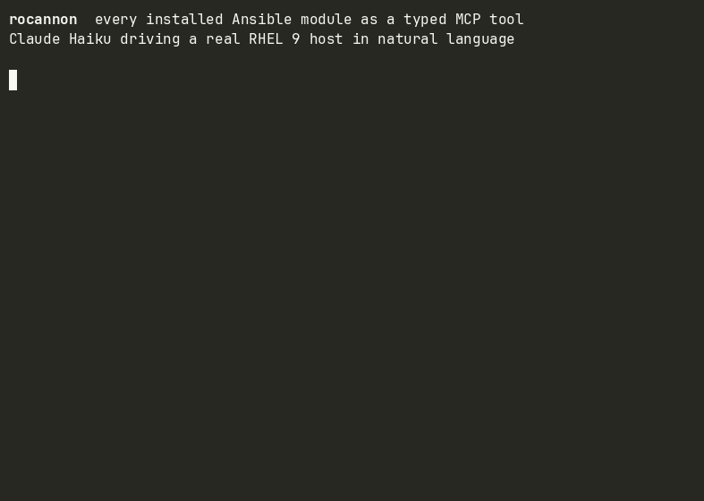

Open source · MIT · Python 3.12+
Open source · MIT · Python 3.12+
Rocannon
Every Ansible module as a typed MCP tool.
Rocannon runs on your Ansible control node. At startup it reads ansible-doc and registers every installed module and role as a typed MCP tool. Claude Code, Cursor, or any MCP client can then drive your real infrastructure with typed, idempotent Ansible primitives.
pip install rocannon
rocannon quickstart
# → scaffolds a localhost profile, prints MCP client wiring
What it does
Install a collection and its modules become tools. Parameters, types, defaults, and choices come directly from ansible-doc. Nothing to configure.
Any role with meta/argument_specs.yml becomes a typed tool. Arguments are the spec parameters, validated by Ansible at run time.
Tools get safety hints (read-only vs destructive), collection tags, and a meta block with the module's documented requirements, return keys, and version.
Any session can be committed as a standard Ansible playbook that runs with ansible-playbook. Rocannon is not required for replays.
Modules that support check mode expose check and diff parameters, both on the CLI and as MCP tool arguments.
Declare inventory, modules, and credentials in a YAML profile. Switch profiles at runtime via rocannon_use_profile without restarting the server.
Common collections
| Collection | What you get |
|---|---|
ansible.builtin |
Package, service, file, user, template — Linux essentials across distros |
amazon.aws |
EC2, S3, RDS, VPC, IAM — plus OS-level configuration on the instances |
kubernetes.core |
K8s resources and node-level OS config before the API exists |
community.docker |
Containers, images, networks — and Docker Engine install on bare hosts |
community.mongodb |
Install mongod, write mongod.conf, configure replica sets |
community.postgresql |
Install PostgreSQL, configure pg_hba.conf, set up replication |
cisco.ios / arista.eos |
Idempotent network device config via NETCONF/SSH with check mode |
ibm.ibm_zos_core |
z/OS data sets, jobs, USS — runs natively on LinuxONE |